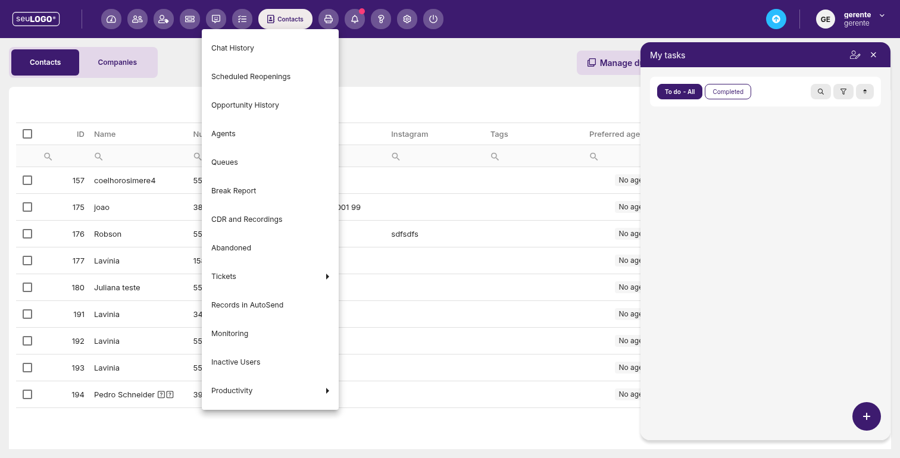
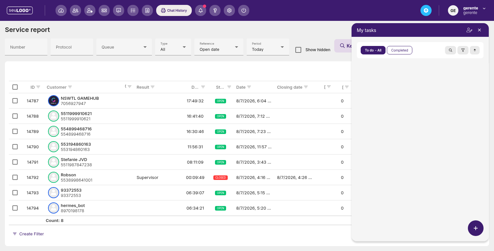

Relatórios
Acesse o histórico detalhado da operação: chats, filas, pausas, gravações, produtividade e mais.

1. Abrindo os relatórios
No menu lateral de Reports, selecione o tipo de relatório desejado. As opções observadas na plataforma são:
2. Exemplo: Chat History (Service report)
O relatório de histórico de chat traz filtros e uma grade detalhada:

Filtros
| Filtro | Descrição |
|---|---|
| Number | Filtrar por número do cliente. |
| Protocol | Filtrar por protocolo do atendimento. |
| Queue | Filtrar por fila. |
| Type | Filtrar por tipo (All = todos). |
| Reference | Ordenar/referênciar por (ex.: Open date). |
| Period | Período (ex.: Today). |
| Show hidden | Exibir registros ocultos. |
| Keywords | Buscar por palavras-chave. |
Colunas da grade
ID, Customer, Label, Result, Duration, State (OPEN/CLOSED), Date, Closing date, Customer rating, AI Evaluation, Dissatisfied customer, além das funções de ação. Ao final, há o totalizador “Customer Count”.
Exportação: relatórios com grade costumam oferecer botões para exportar para Excel e escolher colunas (Column Chooser).